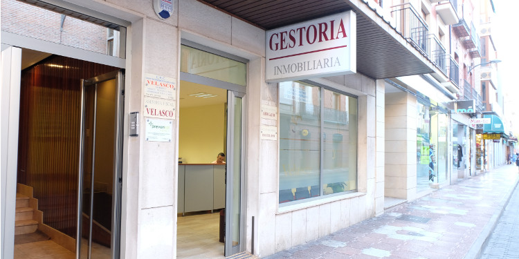
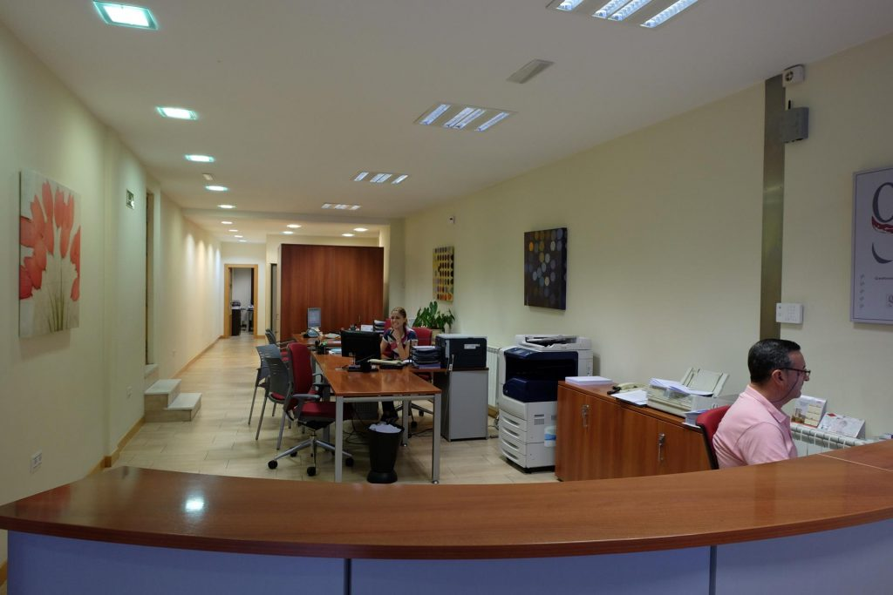

Gestoría
Gestiones Tráfico, Transportes, Certificados, Renovación Permisos de Conducir, Permisos de Armas etc…
Ver serviciosGestoría en Medina del Campo y Valladolid
Con una experiencia de más de 70 años «Gestoría Velasco» ofrece a nuestros clientes una gestión personalizada y eficaz, integrando de forma coordinada los servicios tanto de gestoría administrativa, como en asesoría fiscal, laboral y jurídica. También somos expertos en el área inmobiliaria.

Le esperamos para poder ayudarle a realizar cualquier trámite en Medina del Campo y Valladolid.
Gestiones Tráfico, Transportes, Certificados, Renovación Permisos de Conducir, Permisos de Armas etc…
Ver serviciosGestiones en el Registro Mercantil, Registro Propiedad y formalización de Escrituras.
Contabilidades, Declaraciones sobre la Renta y Patrimonio, Declaraciones Tributarias, de IVA, Pagos Fraccionados y Retenciones, y cualquier gestión con la Agencia Tributaria.
Ver serviciosNóminas y Seguros Sociales, Altas, bajas y variaciones laborales, Inscripción de Empresas en la Seguridad Social, Mutualidades, Contratos de Trabajo, Declaraciones IRPF e Inspecciones Laborales, etc…
Ver serviciosTramitación, Testamentos, Sucesiones, Donaciones e Impuestos.
Constitución e inscripción de una sociedad, altas, permisos y licencias y solicitud de subvenciones.
Permisos de trabajo y residencia, expedientes de nacionalidad, permisos de extranjería, fiscalidad.
Cualquier trámite.
Gestoría Velasco cuenta con un equipo profesional cualificado para resolver cualquier trámite ante una administración pública. Nuestro equipo de trabajo cuenta con gestores administrativos, además de contar con un programa de formación continua, exclusiva e innovadora prestada y regulada por el colegio oficial de gestores administrativos de Castilla y León.
Nuestra meta es encontrar la solución óptima que encaje y se pueda adaptar a las necesidades de cada cliente.
Gestoría Velasco ofrece asesoramiento profesional en el área administrativa.
Gestoría Velasco realiza todo tipo de trámites en la gestión del tráfico.
Gestoría Velasco resuelve cualquier problema que puedan surgir en el proceso de la herencia.
Gestoría Velasco cuenta con un departamento de Asesoría Fiscal integrado por un equipo profesional cualificado para resolver cualquier trámite, bien sea una persona física o jurídica. Nuestro equipo de trabajo cuenta con formación especializada en área fiscal para poder asesorar a nuestros clientes en materia de impuestos, tributos y tasas, con una formación continua y adaptada a la complejidad y actualización de las leyes.
Gestoría Velasco busca la mejor solución de ahorro para sus clientes.
En Gestoría Velasco buscamos la mejor solución para que los autónomos puedan desarrollar su negocio en el día a día. Aportamos el valor a tu proyecto, desde el área administrativa, fiscal, laboral, para que todos tus esfuerzos vayan a parar a lo que realmente es importante para vosotros, vuestro negocio.
Impuestos
En Gestoría Velasco damos asesoramiento Laboral y de la Seguridad Social a empresas y autónomos.
Gestoría Velasco cuenta con un equipo de profesionales en las principales áreas del derecho a su disposición.
Gestoría Velasco te asesora en el alquiler, compra o venta de tu negocio.
Nuestro objetivo es ofrecer servicios de alta calidad técnica, con un trato muy personalizado y adaptado a las necesidades de cada cliente, siendo nuestros trazos diferenciales, entre otros, el alto grado de especialización del equipo humano que integra nuestro despacho, nuestra amplia experiencia, nuestras garantías de éxito y solvencia ante cualquier contingencia.
Contamos con una plantilla altamente cualificada que pone a su disposición toda la pericia que le ha sido otorgada por la experiencia de años de trabajo en el sector.
Somos gestores administrativos, profesionales titulados, libres e independientes y tenemos capacidad para informar, aconsejar, asesorar a cualquier persona física o jurídica para realizar cualquier clase de trámites con la Administración y cualquier tipo de actuación que mantenga relación con órganos locales, autonómicos y estatales.

Esperamos su visita en Medina del Campo o Valladolid.